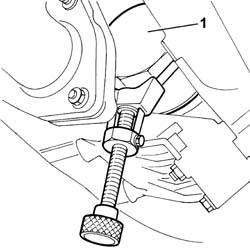

1084B30 CARTRIDGE ENGINE OIL FILTER -R.R.
- Path
- Procedures > 10 ENGINE > 1084 ENGINE LUBRICATION > 1084B ENGINE OIL LUBRICATION CIRCUIT > 1084B30 CARTRIDGE ENGINE OIL FILTER -R.R.
- Kind
- repair procedure (removal / refitting; the operation number is the code)
- Applies to
- engines: 2.4 JTD 10V; all production periods
- Interactive page
- https://sloeber94.github.io/elrnDB-lThss/en/#/76139
Applies to: all engines; all production periods
 Removing
Removing
 Refitting
Refitting- Position the vehicle on a lift.
See in Op. 7055B54 PROTECTION/GUARD under engine - R.R.
1. Remove the cartridge engine oil filter using the special tool.

Applies to: all engines; all production periods
Refitting
Removing- Lubricate the seal with engine oil and fit the engine oil filter tightening it fully by hand.
See in Op. 7055B54 PROTECTION/GUARD under engine - R.R.
- [0010T11]
- Remove the vehicle from the lift.